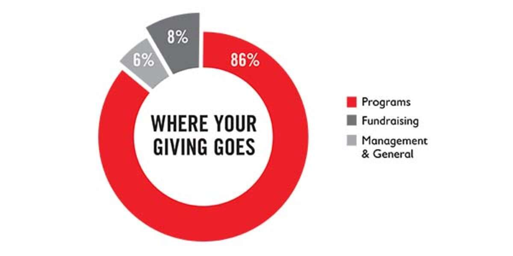

DONATE TO A TOP-RATED CHILDREN'S CHARITY
Right now, the world's children are growing up in a deadly pandemic – their lives and futures on the line. But through the dedicated support of donors like you, Save the Children is on the front lines, doing whatever it takes to protect children in the U.S. and around the world. Your charity donation helps create positive change that children need right now.Save the Children is devoted solely to serving children’s needs and securing their rights. This lifesaving work has been recognized by charity watch groups. Recently, we were proud to receive our 16th four-star rating from Charity Navigator for sound fiscal management and a proven commitment to accountability and transparency. You can rest assured that your charity donation to Save the Children is one of the world’s best investments. In fact, we keep administrative costs low so that more funding goes to children’s programs.